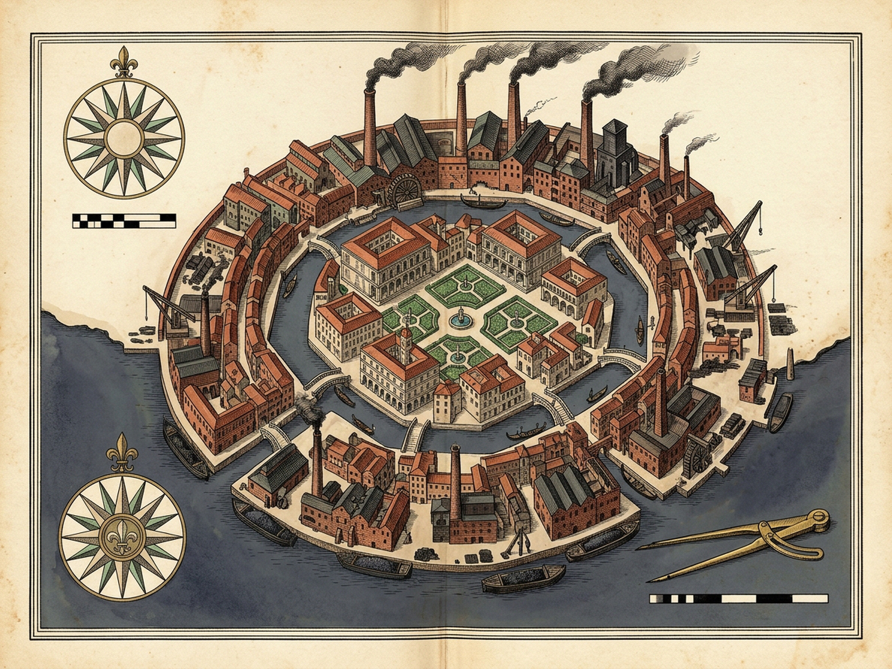
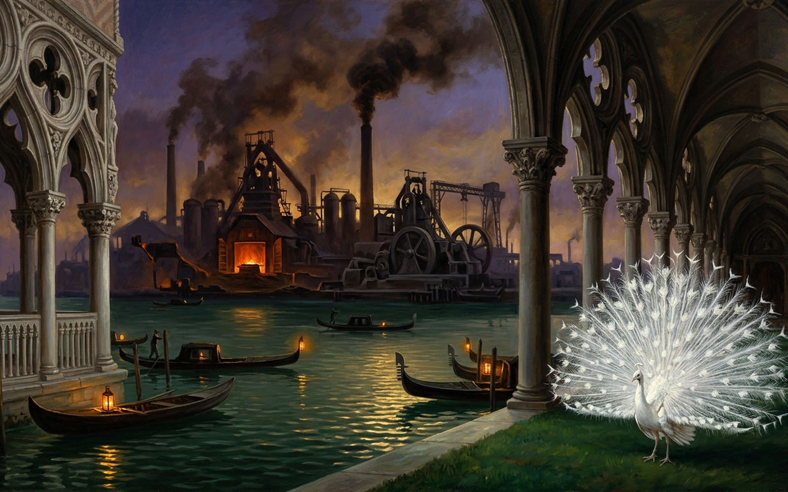

Olivia
A pierced alabaster screen & a duplicity prism — speak the city graciously, and watch what its things disclose
␣Utter Oration
DFiligree DiscourseLiteral Bleak
MSound
RReset
PPlates
Polo's Graceful Stones · 1–6
IFiligree Palaces & Fringed Cushionsunspoken
IIWhite Peacock & Spinning Sprinklersunspoken
IIISupple White-Leather Saddlersunspoken
IVChattering Raffia-Rug Weaversunspoken
VHanging Canals & Mill Wheelsunspoken
VIGreen Estuary Bow-Lantern Canoesunspoken
Only graceful words can carry this city's breath and fortune — yet every true word lets the soot through the tracery.
WORD FALSEHOOD: 0.00
THING DUPLICITY: 0.12
APERTURE: 0.38
LITERAL CLICHÉ TRAP — grey schematic, no breath, no fortune · VITALITY 0.14 · CLARITY 0.18
Speak a stone (1–6) or press Space to begin the oration.
Move across the screen to steer the prism; [ and ] widen or narrow its aperture.
Soot Disclosure Gauge
Word Falsehood0.00
Soot Disclosure0.08
Thing Duplicity0.12
Grease Crust0.05
Vitality0.82
Clarity0.30
Thing-Duplicity Prism · Aperture [ ]
APERTURE 0.38LENS u0.45 v0.35
NEAREST: Grease Crusts on House Walls
Duplicity Ledger · Word ↔ Thing
IFiligree Palaces & Fringed Cushions↳ Thick Clouds of Sootunspoken · thing veiled
IIWhite Peacock & Spinning Sprinklers↳ Grease Crusts on House Wallsunspoken · thing veiled
IIISupple White-Leather Saddlers↳ Trailers Crushing Pedestriansunspoken · thing veiled
IVChattering Raffia-Rug Weavers↳ Sarcastic Evening Laughterunspoken · thing veiled
VHanging Canals & Mill Wheels↳ Fixed-Pace Lathe Mandrelsunspoken · thing veiled
VIGreen Estuary Bow-Lantern Canoes↳ Sleepwalking Outskirtsunspoken · thing veiled
120 RPM LATHE SHIFT
mill wheel 24 RPM · shafting coupled · 0 mandrel turns this shift · 0 / 6 stones spoken
“Falsehood is never in words; it is in things.”
1–6 speak · Space/U oration · D discourse · [ ] aperture · M mute · R reset · P plates · Z loupe · Esc close
Royal Plates · Olivia
Diptych
Cartographic Survey
Architectural Plate
Z · Loupe 1x
Esc · Close

Cartographic survey (map.png) is still being engraved by the Royal Plate Guild.
Cartographic Survey · 1600 × 1200

Architectural plate (image.png) is still being engraved by the Royal Plate Guild.
Architectural Plate · 1600 × 1000